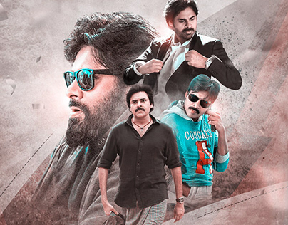

Pawan Kalyan, famously known as the "Power Star," commands a cult-like following that transcends cinema. The younger brother of Megastar Chiranjeevi, he carved a unique identity with his rebellious attitude, stylized martial arts-infused action, and deep connection with youth culture.
Beyond cinema, Pawan serves as the Deputy Chief Minister of Andhra Pradesh (since June 2024), balancing blockbuster films with political leadership. His mass appeal stems from chart-topping songs, trendsetting fashion, and unwavering fan loyalty that spans generations.
| Actor Profile: Pawan Kalyan | |
|---|---|
| Feature | Details |
| Full Name | Konidela Pawan Kalyan (Born Kalyan Babu) |
| Born | September 2, 1972 (Age 53) |
| Birthplace | Bapatla, Andhra Pradesh |
| Nicknames | Power Star, Kalyan Babu, Deputy CM |
| Occupation | Actor, Deputy CM of Andhra Pradesh, Martial Artist, Philanthropist |
| Political Role | Deputy Chief Minister (Jana Sena Party - Since 2024) |
| Debut Film | Akkada Ammayi Ikkada Abbayi (1996) |
| Blockbusters | Gabbar Singh, Attarintiki Daredi, Vakeel Saab |
| Upcoming Films | PSPK 29 |
| Spouse | Anna Lezhneva (m. 2013) |
| Children | Akira Nandan, Aadhya, Polena Anjana, Mark Shankar |
| Awards | National Film Award (Producer), Filmfare Best Actor South |
| For More Info | Pawan Kalyan - Wikipedia |